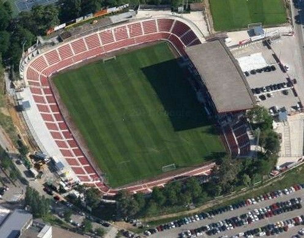
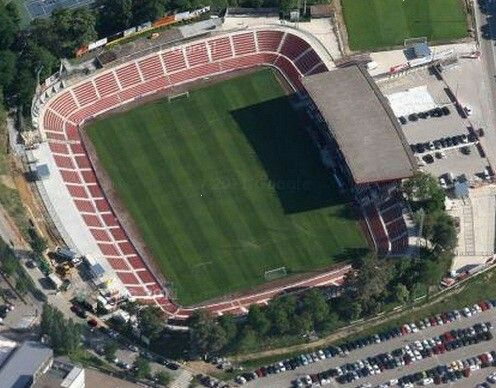

Girona

Nombre completo: Girona Futbol Club S.A.D
Apodo: Blanquivermells
Fundacion: 1930
Ciudad: Gerona
Estadio: Estadio Municipal de Montilivi
ESTADIO
Nombre: Estadio Municipal de Montilivi
Fundacion: 1970
Ciudad: Gerona
Capacidad: 13.500 espectadores
 
